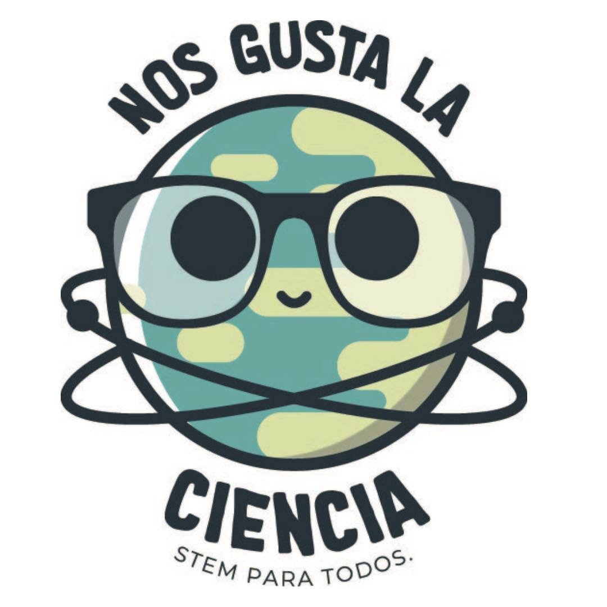
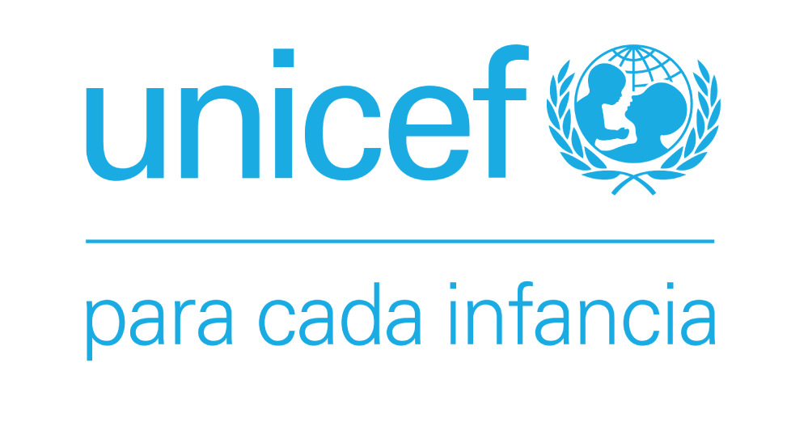
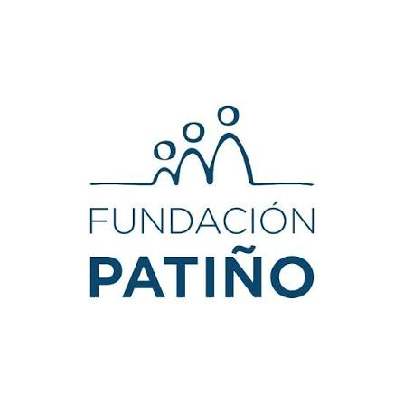
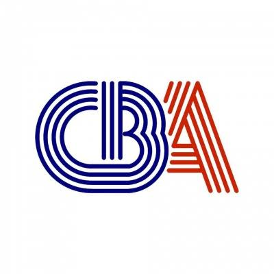
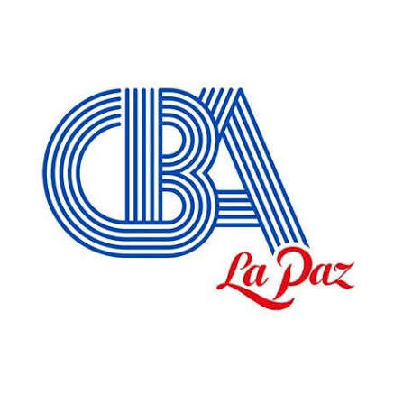
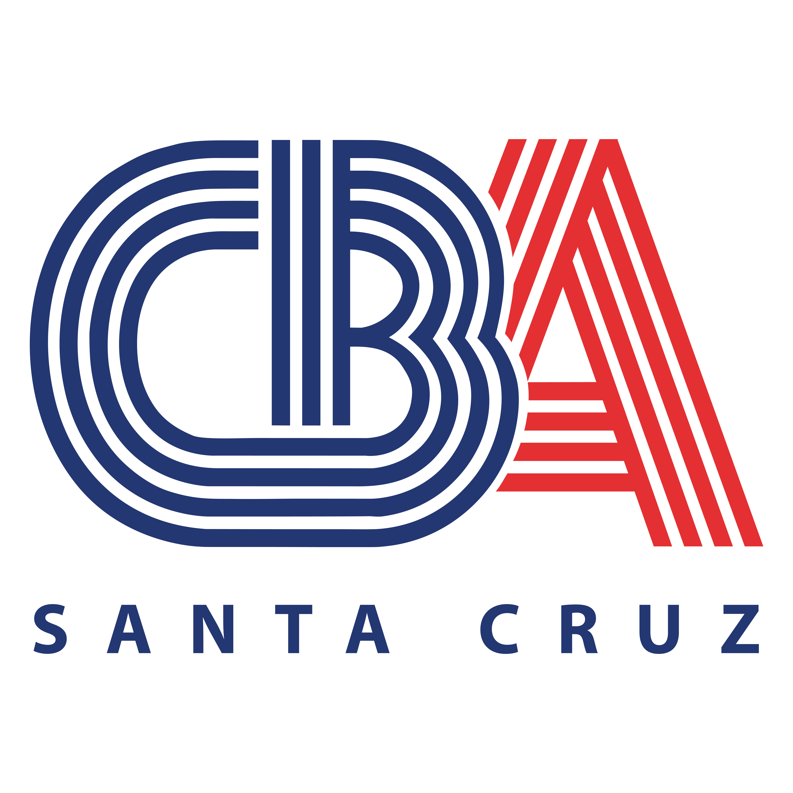
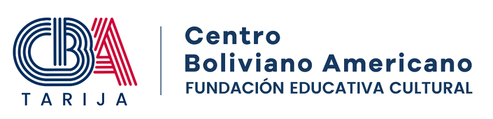

Historia y Trayectoria del Programa
¿Cómo nace?
Somos voluntariado un programa de de divulgación científica que trabaja para incentivar la curiosidad investigativa de jóvenes estudiantes, mediante la motivación en seguir áreas STEM (Ciencia, tecnología, ingeniería y matemáticas), promoviendo la elección de carreras científicas.

¿Qué nos brinda?
[Detalla aquí los espacios, formación, herramientas o beneficios que el programa ofrece a los participantes...]

Proyectos
• Ciencia en las ciudadelas
• Ciencia en casa
• De la Impresión a la imaginación 3D
• Club de Chicas Programadoras
• RECIBOT

¿Dónde nos encontramos?
[Indica la ubicación física, ciudad, dirección exacta o sedes institucionales...]
¿Quiénes nos apoyan?
UNICEF:Para cada infancia

FUNDACION PATIÑO

CBA:Centro boliviano americano
COCHABAMBA

LA PAZ

SANTA CRUZ

TARIJA

Con la subvención de:
FONDO DE MUJERES APTHAPI JOPUETI